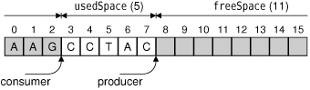

|
|
A common requirement for multithreaded applications is that of synchronizing several threads. Qt provides the following synchronization classes: QMutex, QReadWriteLock, QSemaphore, and QWaitCondition.
The QMutex class provides a means of protecting a variable or a piece of code so that only one thread can access it at a time. The class provides a lock() function that locks the mutex. If the mutex is unlocked, the current thread seizes it immediately and locks it; otherwise, the current thread is blocked until the thread that holds the mutex unlocks it. Either way, when the call to lock() returns, the current thread holds the mutex until it calls unlock(). The QMutex class also provides a tryLock() function that returns immediately if the mutex is already locked.
For example, let's suppose that we wanted to protect the stopped variable of the Thread class from the preceding section with a QMutex. We would then add the following member variable to Thread:
private:
...
QMutex mutex;
};
The run() function would change to this:
void Thread::run()
{
forever {
mutex.lock();
if (stopped) {
stopped = false;
mutex.unlock();
break;
}
mutex.unlock();
std::cerr << qPrintable(messageStr);
}
std::cerr << std::endl;
}
The stop() function would become this:
void Thread::stop()
{
mutex.lock();
stopped = true;
mutex.unlock();
}
Locking and unlocking a mutex in complex functions, or in functions that throw C++ exceptions, can be error-prone. Qt offers the QMutexLocker convenience class to simplify mutex handling. QMutexLocker's constructor accepts a QMutex as argument and locks it. QMutexLocker's destructor unlocks the mutex. For example, we could rewrite the earlier run() and stop() functions as follows:
void Thread::run()
{
forever {
{
QMutexLocker locker(&mutex);
if (stopped) {
stopped = false;
break;
}
}
std::cerr << qPrintable(messageStr);
}
std::cerr << std::endl;
}
void Thread::stop()
{
QMutexLocker locker(&mutex);
stopped = true;
}
One issue with using mutexes is that only one thread can access the same variable at a time. In programs with lots of threads trying to read the same variable simultaneously (without modifying it), the mutex can be a serious performance bottleneck. In these cases, we can use QReadWriteLock, a synchronization class that allows simultaneous read-only access without compromising performance.
In the Thread class, it would make no sense to replace QMutex with QReadWriteLock to protect the stopped variable, because at most one thread might try to read the variable at any given time. A more appropriate example would involve one or many reader threads accessing some shared data and one or many writer threads modifying the data. For example:
MyData data;
QReadWriteLock lock;
void ReaderThread::run()
{
...
lock.lockForRead();
access_data_without_modifying_it(&data);
lock.unlock();
...
}
void WriterThread::run()
{
...
lock.lockForWrite();
modify_data(&data);
lock.unlock();
...
}
For convenience, we can use the QReadLocker and QWriteLocker classes to lock and unlock a QReadWriteLock.
QSemaphore is another generalization of mutexes, but unlike read-write locks, semaphores can be used to guard a certain number of identical resources. The following two code snippets show the correspondence between QSemaphore and QMutex:
QSemaphore semaphore(1); semaphore.acquire(); semaphore.release(); |
QMutex mutex; mutex.lock(); mutex.unlock(); |
By passing 1 to the constructor, we tell the semaphore that it controls a single resource. The advantage of using a semaphore is that we can pass numbers other than 1 to the constructor and then call acquire() multiple times to acquire many resources.
A typical application of semaphores is when transferring a certain amount of data (DataSize) between two threads using a shared circular buffer of a certain size (BufferSize):
const int DataSize = 100000; const int BufferSize = 4096; char buffer[BufferSize];
The producer thread writes data to the buffer until it reaches the end and then restarts from the beginning, overwriting existing data. The consumer thread reads the data as it is generated. Figure 14.2 illustrates this, assuming a tiny 16-byte buffer.

The need for synchronization in the producer–consumer example is twofold: If the producer generates the data too fast, it will overwrite data that the consumer hasn't yet read; if the consumer reads the data too fast, it will pass the producer and read garbage.
A crude way to solve this problem is to have the producer fill the buffer, then wait until the consumer has read the entire buffer, and so on. However, on multiprocessor machines, this isn't as fast as letting the producer and consumer threads operate on different parts of the buffer at the same time.
One way to efficiently solve the problem involves two semaphores:
QSemaphore freeSpace(BufferSize); QSemaphore usedSpace(0);
The freeSpace semaphore governs the part of the buffer that the producer can fill with data. The usedSpace semaphore governs the area that the consumer can read. These two areas are complementary. The freeSpace semaphore is initialized with BufferSize (4096), meaning that it has that many resources that can be acquired. When the application starts, the reader thread will start acquiring "free" bytes and convert them into "used" bytes. The usedSpace semaphore is initialized with 0 to ensure that the consumer won't read garbage at startup.
For this example, each byte counts as one resource. In a real-world application, we would probably operate on larger units (e.g., 64 or 256 bytes at a time) to reduce the overhead associated with using semaphores.
void Producer::run()
{
for (int i = 0; i < DataSize; ++i) {
freeSpace.acquire();
buffer[i % BufferSize] = "ACGT"[uint(std::rand()) % 4];
usedSpace.release();
}
}
In the producer, every iteration starts by acquiring one "free" byte. If the buffer is full of data that the consumer hasn't read yet, the call to acquire() will block until the consumer has started to consume the data. Once we have acquired the byte, we fill it with some random data ('A', 'C', 'G', or 'T') and release the byte as "used", so that the consumer thread can read it.
void Consumer::run()
{
for (int i = 0; i < DataSize; ++i) {
usedSpace.acquire();
std::cerr << buffer[i % BufferSize];
freeSpace.release();
}
std::cerr << std::endl;
}
In the consumer, we start by acquiring one "used" byte. If the buffer contains no data to read, the call to acquire() will block until the producer has produced some. Once we have acquired the byte, we print it and release the byte as "free", making it possible for the producer to fill it with data again.
int main()
{
Producer producer;
Consumer consumer;
producer.start();
consumer.start();
producer.wait();
consumer.wait();
return 0;
}
Finally, in main(), we start the producer and consumer threads. Then the producer converts some "free" space into "used" space, and the consumer can convert it back to "free" space.
When we run the program, it writes a random sequence of 100000 'A's, 'C's, 'G's, and 'T's to the console and terminates. To really understand what is going on, we can disable writing the output and instead write 'P' each time the producer generates a byte and 'c' each time the consumer reads a byte. And to make things as simple to follow as possible, we can use smaller values for DataSize and BufferSize.
For example, here's a possible run with a DataSize of 10 and a BufferSize of 4: "PcPcPcPcPcPcPcPcPcPc".In this case, the consumer reads the bytes as soon as the producer generates them; the two threads are executing at the same speed. Another possibility is that the producer fills the whole buffer before the consumer even starts reading it: "PPPPccccPPPPccccPPcc". There are many other possibilities. Semaphores give a lot of latitude to the system-specific thread scheduler, which can study the threads' behavior and choose an appropriate scheduling policy.
A different approach to the problem of synchronizing a producer and a consumer is to use QWaitCondition and QMutex. A QWaitCondition allows a thread to wake up other threads when some condition has been met. This allows for more precise control than is possible with mutexes alone. To show how it works, we will redo the producer–consumer example using wait conditions.
const int DataSize = 100000; const int BufferSize = 4096; char buffer[BufferSize]; QWaitCondition bufferIsNotFull; QWaitCondition bufferIsNotEmpty; QMutex mutex; int usedSpace = 0;
In addition to the buffer, we declare two QWaitConditions, one QMutex, and one variable that stores how many bytes in the buffer are "used" bytes.
void Producer::run()
{
for (int i = 0; i < DataSize; ++i) {
mutex.lock();
while (usedSpace == BufferSize)
bufferIsNotFull.wait(&mutex);
buffer[i % BufferSize] = "ACGT"[uint(std::rand()) % 4];
++usedSpace;
bufferIsNotEmpty.wakeAll();
mutex.unlock();
}
}
In the producer, we start by checking whether the buffer is full. If it is, we wait on the "buffer is not full" condition. When that condition is met, we write one byte to the buffer, increment usedSpace, and wake any thread waiting for the "buffer is not empty" condition to turn true.
We use a mutex to protect all accesses to the usedSpace variable. The QWaitCondition::wait() function can take a locked mutex as its first argument, which it unlocks before blocking the current thread and then locks before returning.
For this example, we could have replaced the while loop
while (usedSpace == BufferSize)
bufferIsNotFull.wait(&mutex);
with this if statement:
if (usedSpace == BufferSize) {
mutex.unlock();
bufferIsNotFull.wait();
mutex.lock();
}
However, this would break as soon as we allow more than one producer thread, since another producer could seize the mutex immediately after the wait() call and make the "buffer is not full" condition false again.
void Consumer::run()
{
for (int i = 0; i < DataSize; ++i) {
mutex.lock();
while (usedSpace == 0)
bufferIsNotEmpty.wait(&mutex);
std::cerr << buffer[i % BufferSize];
--usedSpace;
bufferIsNotFull.wakeAll();
mutex.unlock();
}
std::cerr << std::endl;
}
The consumer does the exact opposite of the producer: It waits for the "buffer is not empty" condition and wakes up any thread waiting for the "buffer is not full" condition.
In all the examples so far, our threads have accessed the same global variables. But some multithreaded applications need to have a global variable hold different values in different threads. This is often called thread-local storage or thread-specific data. We can fake it using a map keyed on thread IDs (returned by QThread::currentThread()), but a nicer approach is to use the QThreadStorage<T> class.
A common use of QThreadStorage<T> is for caches. By having a separate cache in different threads, we avoid the overhead of locking, unlocking, and possibly waiting for a mutex. For example:
QThreadStorage<QHash<int, double> *> cache;
void insertIntoCache(int id, double value)
{
if (!cache.hasLocalData())
cache.setLocalData(new QHash<int, double>);
cache.localData()->insert(id, value);
}
void removeFromCache(int id)
{
if (cache.hasLocalData())
cache.localData()->remove(id);
}
The cache variable holds one pointer to a QHash<int, double> per thread. (Because of problems with some compilers, the template type in QThreadStorage<T> must be a pointer type.) The first time we use the cache in a particular thread, hasLocalData() returns false and we create the QHash<int, double> object.
In addition to caching, QThreadStorage<T> can be used for global error-state variables (similar to errno) to ensure that modifications in one thread don't affect other threads.
|
|
| Converted from CHM to HTML with chm2web Pro 2.85 (unicode) |